This document serves as the official User Guide for the ArP (Artwork Provenance) platform.
It provides a comprehensive walkthrough of the application's interface, features, and navigation flow.
Targeting researchers, museum visitors, and art enthusiasts, this guide explains how to discover artworks,
visualize provenance data, and execute semantic queries without technical knowledge.
The document concludes with three practical case studies demonstrating the system's utility in real-world scenarios.
Introduction
ArP (Artwork Provenance) is a semantic web application designed to interconnect Romanian cultural heritage
with the global art ecosystem. Unlike traditional museum catalogs which are often isolated, ArP links local artists
and artworks to international databases like Wikidata and Getty Vocabularies.
The platform allows users to:
Browse a unified catalog of Romanian and International artworks.
View detailed provenance histories (who owned a painting and when).
Discover connections between artists based on movements, locations, and time periods.
Perform advanced searches using the underlying Knowledge Graph.
Getting Started
The ArP platform is a web-based application, meaning it requires no installation on the client side (the user's device).
It is accessible via any modern web browser (Chrome, Firefox, Edge, Safari).
3.1 Prerequisites
Before accessing the interface, ensure the application server is running.
(For technical instructions on how to clone and launch the server, please refer to the project's
README.md file).
3.2 Accessing the Application
Once the server is active, navigate to the following URL in your browser: http://localhost:8080
Upon loading, you will be greeted by the Home Page (Dashboard), which highlights featured artists and provides quick access to the main catalogs.
The Homepage (Discovery Dashboard)
The homepage acts as a thematic discovery hub, allowing users to explore the collection based on the origin of the resources (Romanian Heritage vs. International Context).
Key features include:
ArP Query Service: A dedicated button in the top-right corner provides direct access to the advanced SPARQL interface for executing semantic queries.
Quick Navigation ("Jump to"): A sticky navigation bar allows users to instantly scroll to specific categories: International Artists, Romanian Artists, or their respective Artworks.
Thematic Grids: The content is divided into four main sections:
International & Romanian Artists: Displays cards with artist portraits. Clicking a card navigates to the list of artworks created by that specific artist.
Arts & Culture (Ro/Int): Displays a curated selection of artworks. Clicking an artwork card opens the detailed metadata view.
"See More" Links: Each section title includes a link (e.g., "see the details") that redirects the user to the full, paginated catalog for that category.
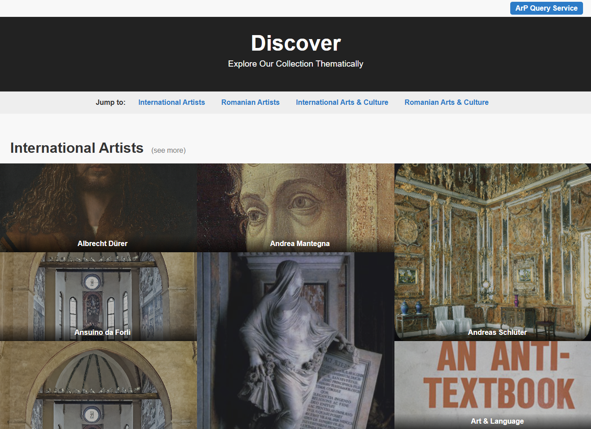
Figure 1. The ArP Discovery Dashboard showing the separation between National and International domains.
Case Studies (Scenarios)
This section illustrates four practical scenarios demonstrating how different user typologies interact with the ArP platform, ranging from basic browsing to advanced semantic querying.
5.1 Scenario 1: Exploring an Artist's Complete Portfolio
User Goal: A user is interested in a specific painter (e.g., Preziosi, Amedeo) and wants to view every artwork attributed to him available in the database to study his stylistic evolution.
Workflow:
From the Home Page, the user identifies the "Romanian Artists" section.
They click on the "(see more)" link to access the full Artist Catalog.
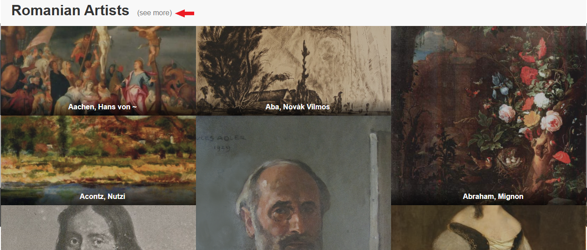
Using the Quick Select dropdown or the pagination controls, the user locates "Preziosi, Amedeo" and clicks "View Artworks".
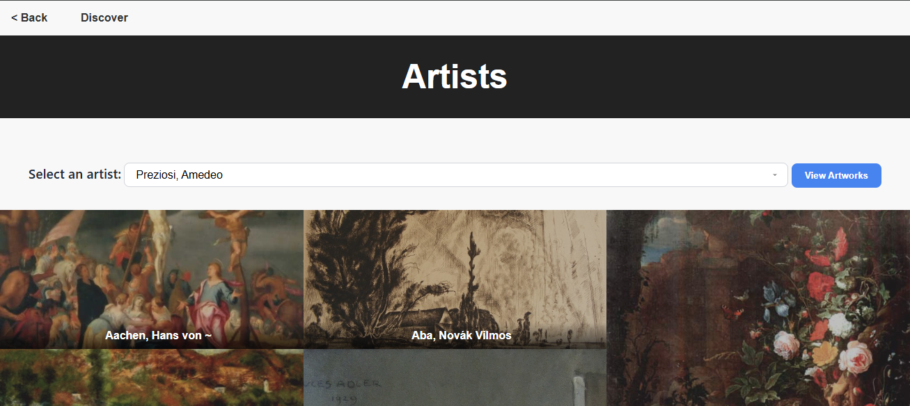
Result: The system displays a grid containing all artworks linked to this artist via the schema:artist property. The user can now scroll through the entire collection in one place.
5.2 Scenario 2: Artwork Analysis and Contextual Discovery
User Goal: A researcher is analyzing a specific painting (e.g., "Oriental") and wants to see its technical details, while also discovering similar works suggested by the system.
Workflow:
The user selects the painting from the artist's portfolio.
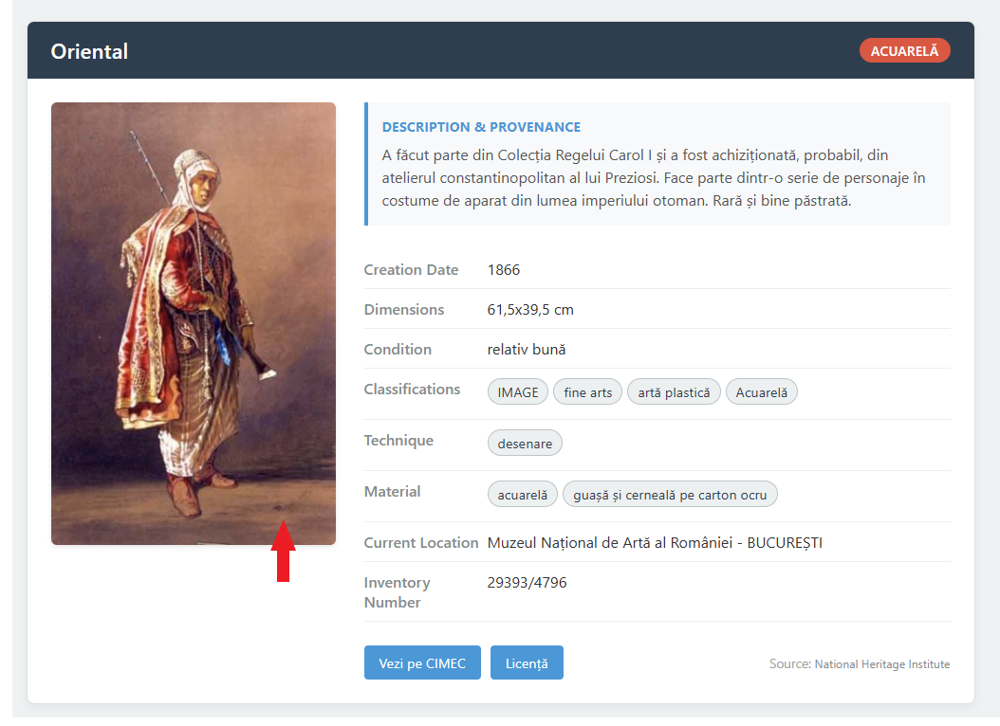
The Artwork Detail Page opens, presenting metadata: Artist, Creation Date, Dimensions, Inventory Number, Material, etc.
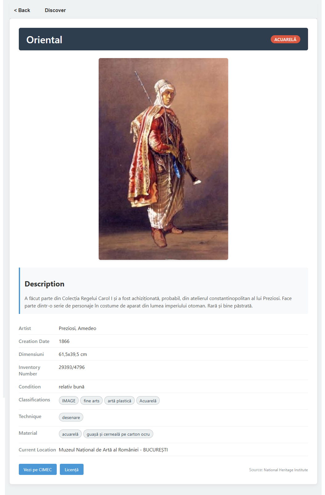
The user scrolls down to the Recommendations Section.
Result: The system uses the semantic graph to offer three distinct discovery paths:
"Other artworks by Artist" (works by the same creator).
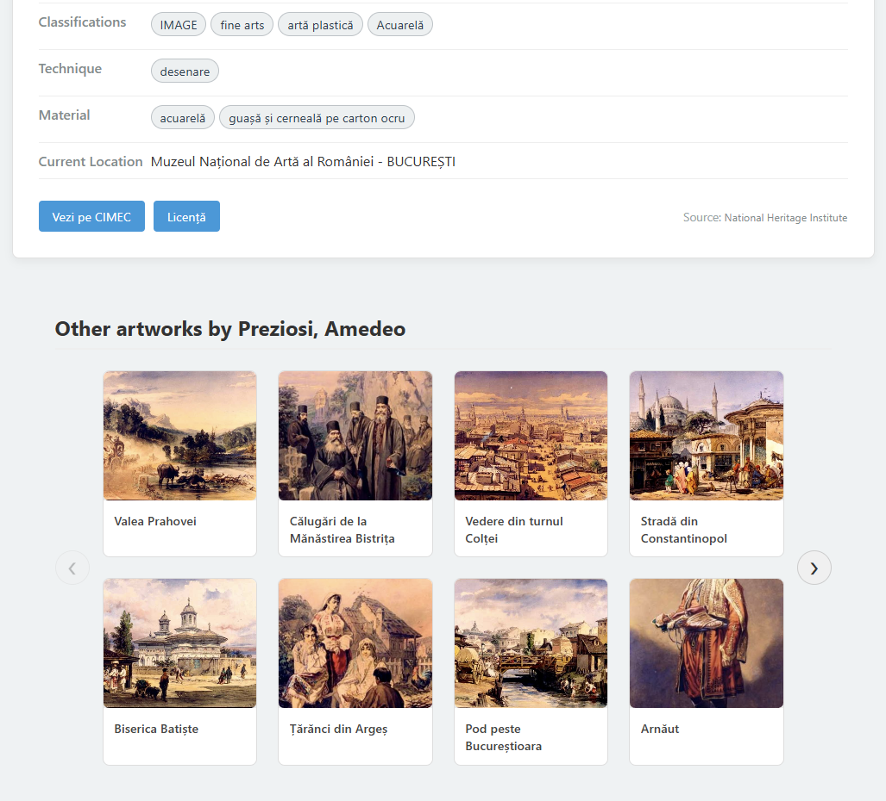
"Other artworks from Museum" (works located in the same physical institution).
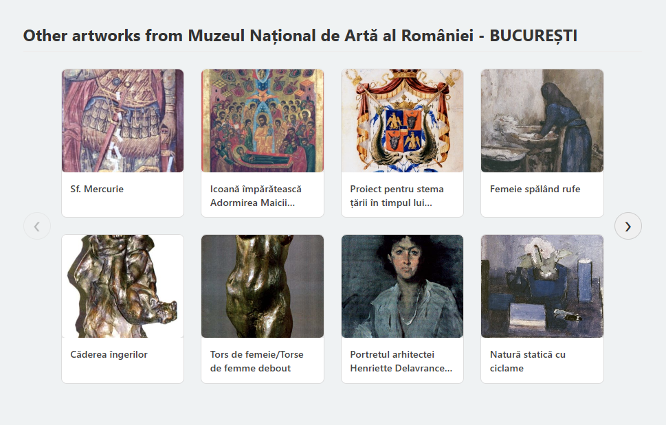
"Other artworks in Category" (works sharing the same classification, e.g., "Painting").
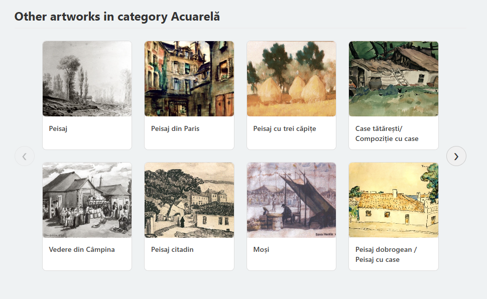
The user clicks a recommendation to seamlessly navigate to a related artwork.
5.3 Scenario 3: Advanced Filtering by Material (Getty AAT)
User Goal: A conservator needs a list of all artworks created using a specific material (e.g., Marble), strictly identified by its standardized Getty Art & Architecture Thesaurus (AAT) code, to ensure terminological precision.
Workflow (ArP Query Service):
The user accesses the ArP Query Service (SPARQL Endpoint) by clicking the dedicated button located in the top-right corner of the Home Page.
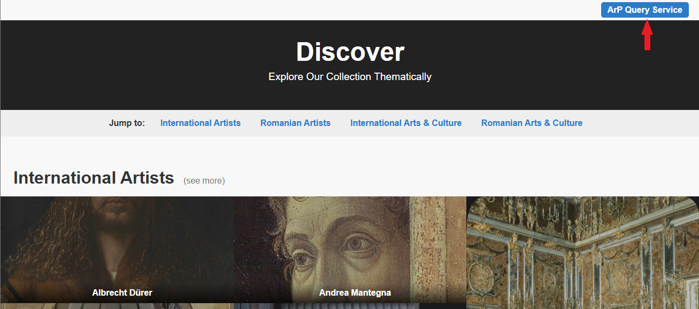
From the list of predefined query templates, the user selects the "Artworks by Material (Getty AAT)" option.
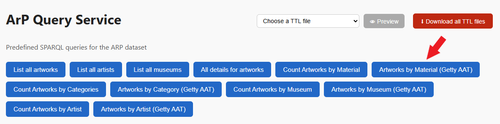
The SPARQL Query editor automatically populates with the code required to filter artworks by their Getty AAT ID. In this example, the query is pre-configured for Marble (identified by the code aat:300011443).
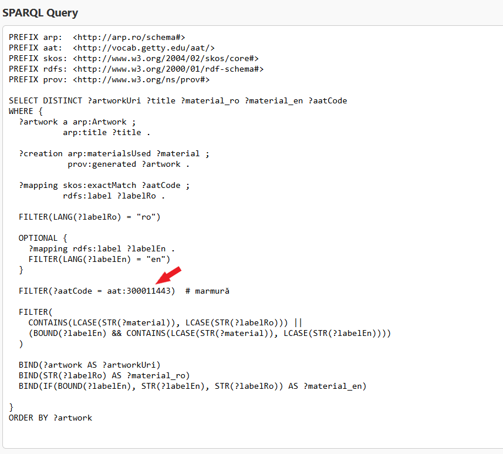
The user executes the command by clicking the Run Query button.
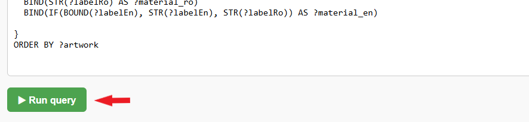
Result: The system displays the output in the Results section below. The data is presented in a tabular format containing columns for the artworkUri (resource reference), title, material_ro, material_en, and the specific aatCode.
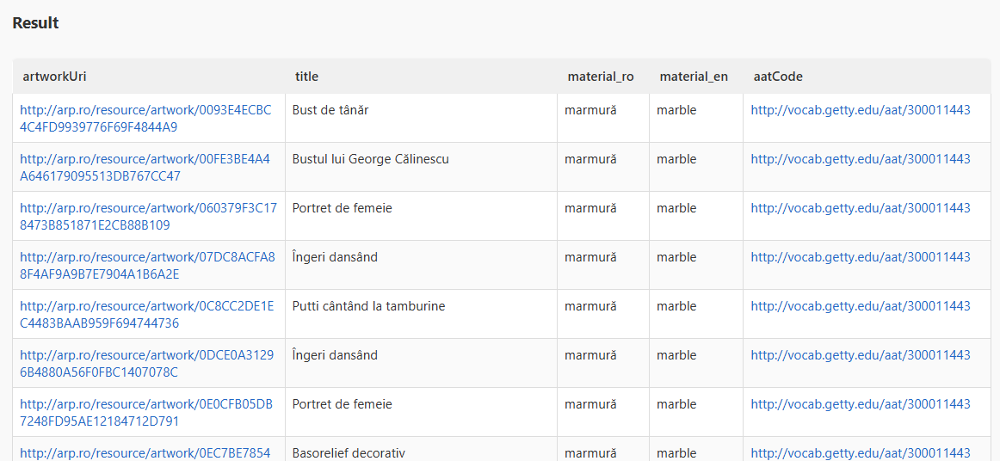
5.4 Scenario 4: Institutional Analytics and Aggregation
User Goal: A data analyst wants to see the distribution of artworks across museums and then retrieve the full inventory for a specific museum using its unique Getty ID.
Workflow (ArP Query Service):
From the list of predefined templates, select "Count Artworks by Museum".
Execute the aggregation query by clicking the Run Query button.
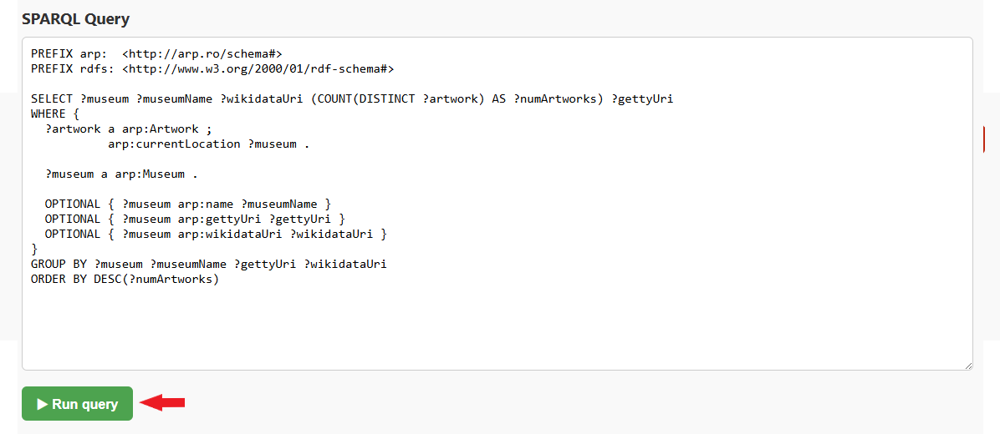
The Results table displays the museum URI, name, a clickable Wikidata link, the total count of artworks, and the Getty URI. From here, note the Getty ID (e.g., 500306614 for The National Museum of Art of Romania).
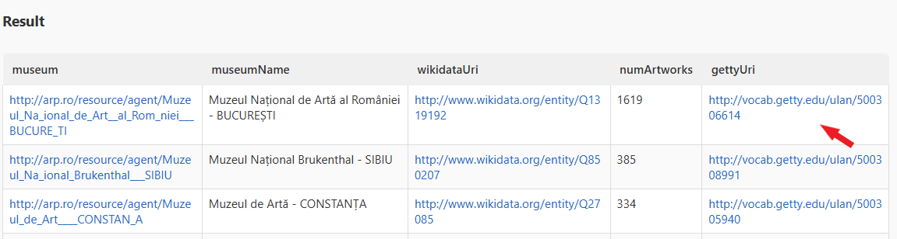
Select a new query template: "Artworks by Museum (Getty Code)".
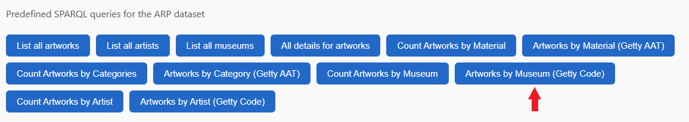
In the gettyId field within the SPARQL editor, enter the ID retrieved in the previous step (e.g., 500306614) and run the query.
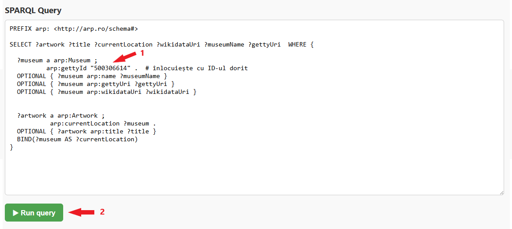
Result: The system generates a complete table listing all artworks currently hosted by the selected museum.
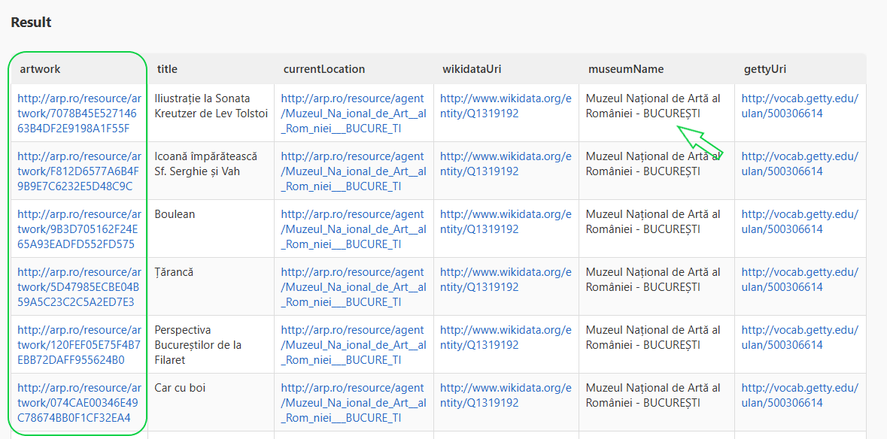
Video Demonstration
A comprehensive video demonstration showcasing the main functionalities and usage scenarios of the ArP platform is available at the following link:
Watch on YouTube